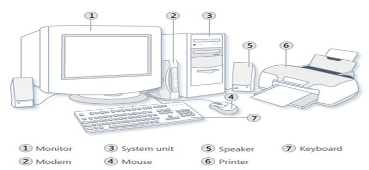

Computer Skils
Introduction to Computer
Computer
A computer is an electronic device,
operating under the control of instructions
stored in its own memory that can accept data ( input ),
process the data according to specified rules,
produce information ( output ), and store the information for future use
Functionalities of a computer
Any digital computer carries out five functions in gross
- Takes data as input.
- Stores the data/instructions in its memory and use them
- Processes the data and converts it into useful
- Generates the output
- Controls all the above four steps
Hardware
- Computer hardware is the collection of physical elements "Tangible objects"
- That constitutes a computer system.
- The actual machinery, wires, transistors, and circuits … etc.
Hardware:

Software
- Computer Programs
- Instructions and data
Computer Units (5 units)
- Input unit
- Central processing unit
- Primary Memory Unit
- Secondary storage unit
- Output unit
Input unit
- Input device is any peripheral (piece of computer hardware equipment to
provide data and control signals to an information processing system such as
a computer or other information appliance.
- Input device Translate data from that humans understand to one that the computer can work with. Most common are keyboard and mouse
Computer Units
Input Devices
Central Processing Unit
- CPU
- known as microprocessor or processor
- It is responsible for all functions and processes
CPU Components
The CPU is computed of three main parts
- ALU (Arithmetic logic Unit)
- Control Unit (CU)
- Registers: Stores the data that is to be executed next
Arithmetic logic Unit (ALU)
- Executes all arithmetic and logical operations.
- Arithmetic calculations like as addition, subtraction, multiplication and division.
- Logical operation like compare numbers, letters, or special characters
Control Unit (CU)
Control Unit (CU): controls and co-ordinates computer components.
- Read the code for the next instruction to be executed.
- Increment the program counter so it points to the next instruction.
- Read whatever data the instruction requires from cells in memory.
- Provide the necessary data to an ALU or register.
- If the instruction requires an ALU or specialized hardware to complete, instruct the hardware to perform the requested operation.
Registers
Registers: Stores the data that is to be executed next, "very fast storage area".
Computer Memory
Computer memory is of two basic type
- Primary memory (RAM and ROM).
- Secondary memory(hard drive,CD,etc.)
Primary memory
RAM: Random Access Memory: is a memory scheme within the computer system responsible for storing data on a temporary basis, so that it can be promptly accessed by the processor as and when needed.
- It is volatile in nature, which means that data will be erased once supply to the storage device is turned off.
- RAM stores data randomly and the processor accesses these data randomly from the RAM storage.
- RAM is considered "random access" because you can access any memory cell directly if you know the row and column that intersect at that cell.
Primary Memory
ROM (Read Only Memory): ROM is a permanent form of storage. ROM stays active regardless of whether power supply
to it is turned on or off. ROM devices do not allow data stored on them to be modified.
Secondary Memory
- Stores data and programs permanently
- its retained after the power is turned off
- Main Examples ( Hard Disk, Optical Disk, Flash memory )
Hard Disk
- Called Disk drive or HDD
- stores and provides relatively quick access to large amounts of data.
- Stores data on an electromagnetically charged surface or set of surfaces
Output Unit
- An output device is any piece of computer hardware equipment used to communicate the results of data processing carried out by an information processing system (such as a computer)
- converts the electronically generated information into human-readable form.
Output devices Example
Unit of Measurements - Storage
Unit of Measurement -Speed
- The speed of CPU measured by unit called Hertz (Hz)
- 1 Hz represent 1 cycle per second.
- The speed of CPU is known as Computer Speed.
Unit of Measurement -Speed
Summary
- Computer Components: Hardware, Software
- Computer Units (5 units): Input, CPU, Primary Memory, Secondary storage
- Input Unit: keyboard and mouse
- CPU Components: ALU (Arithmetic logic Unit), Control Unit, Registers
- Primary memory: RAM, ROM
- Secondary Memory: Hard Disk, Optical Disk, Flash memory
- Output Unit: Monitor, Printer
- Unit of Measurements Storage: Bit, Byte, Kilobyte, Megabyte, Gigobyte, Terabyte
- Unit of Measurement -Speed: 1 billion cycles per secound